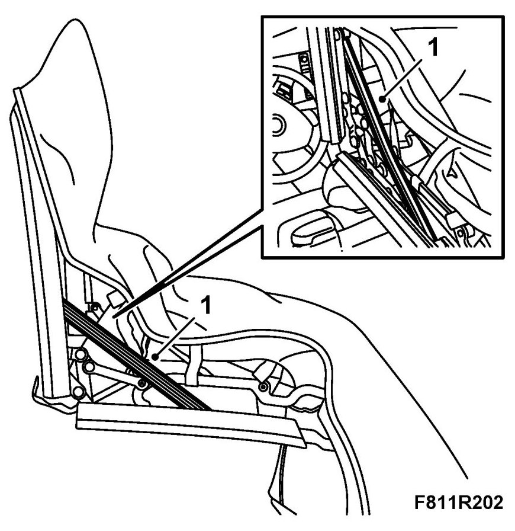
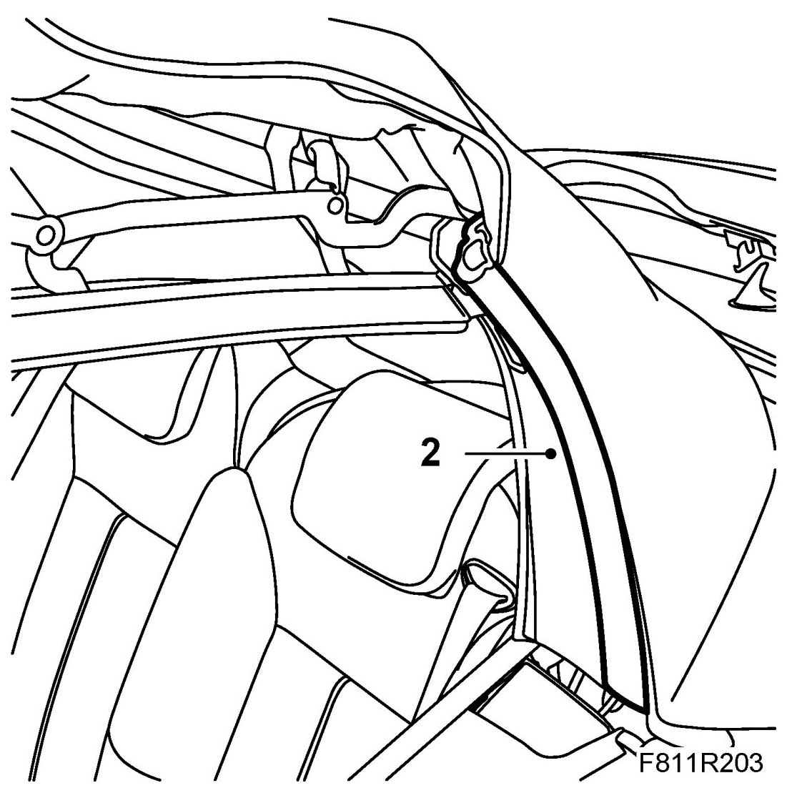
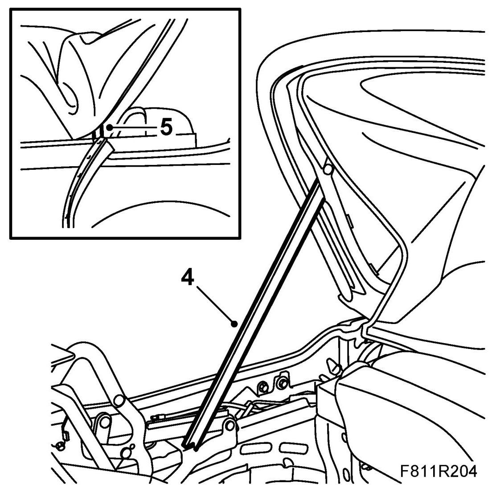
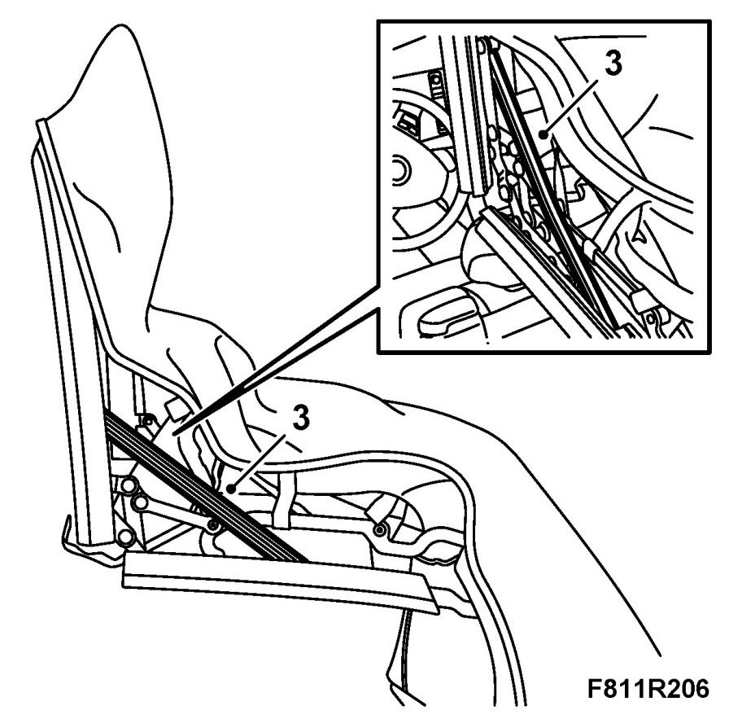
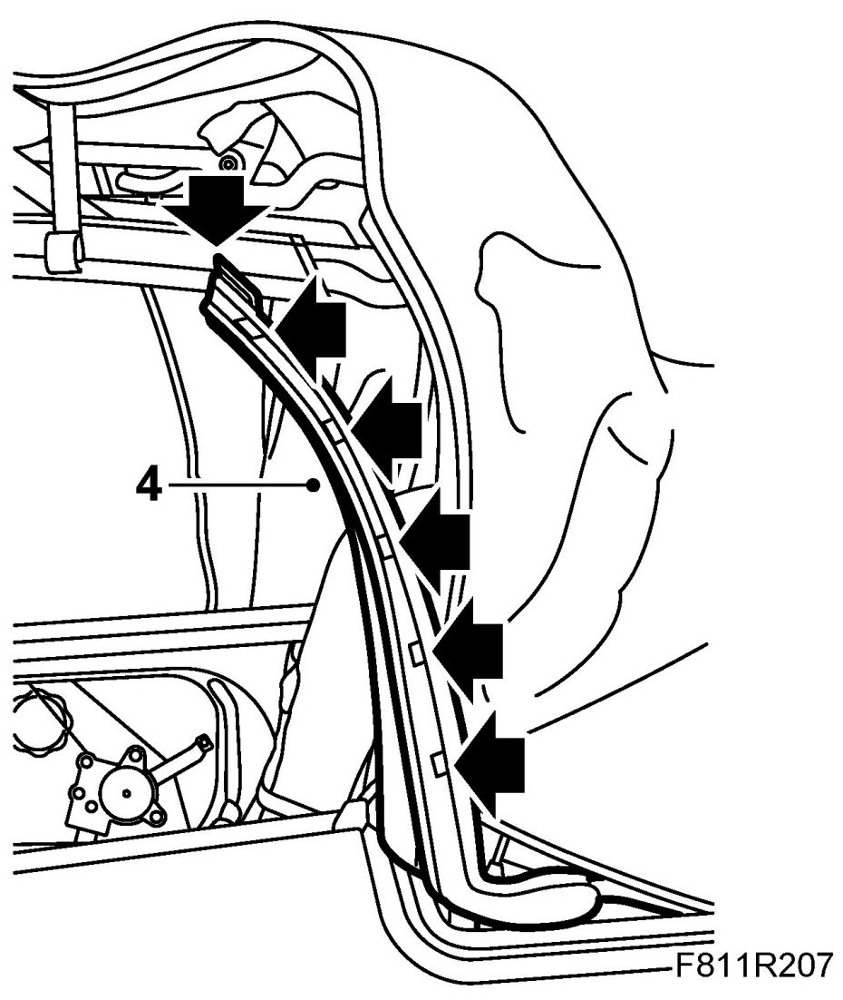

Rear Rail/Sixth Bow Seal
Rear Rail/Sixth Bow Seal
NOTE: The rear rail and sixth bow seal is just one part and must be changed together.
Removing
1. Operate the soft top half way down and secure it with 82 93 847 Soft top support.

2. Remove the seal by pulling it out of the middle part of the U-shaped rail. Unhook the upper part of the seal from the fastener. Let the seal hang.

3. Remove the soft top support and close the soft top.
4. Open the soft top cover and raise the sixth bow. Secure with the soft top support.

5. Pull out the seal from the mounting groove.
Fitting
1. Fit the seal by pressing it into the mounting groove. Start in the corners of the sixth bow and work the seal towards the middle.
2. Remove the soft top support.
3. Operate the soft top half way down and secure it with the soft top support.

4. Make sure the seal is fitted correctly in the corners. Fit the seals on the rear rails. Hook the top part of the seal to the mounting and then press it into the rail.

5. Remove the soft top support and close the soft top.